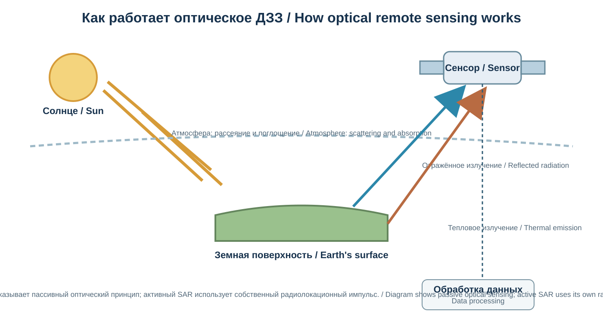
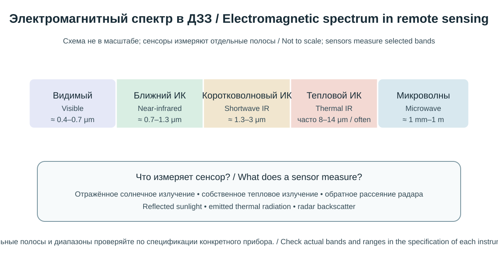
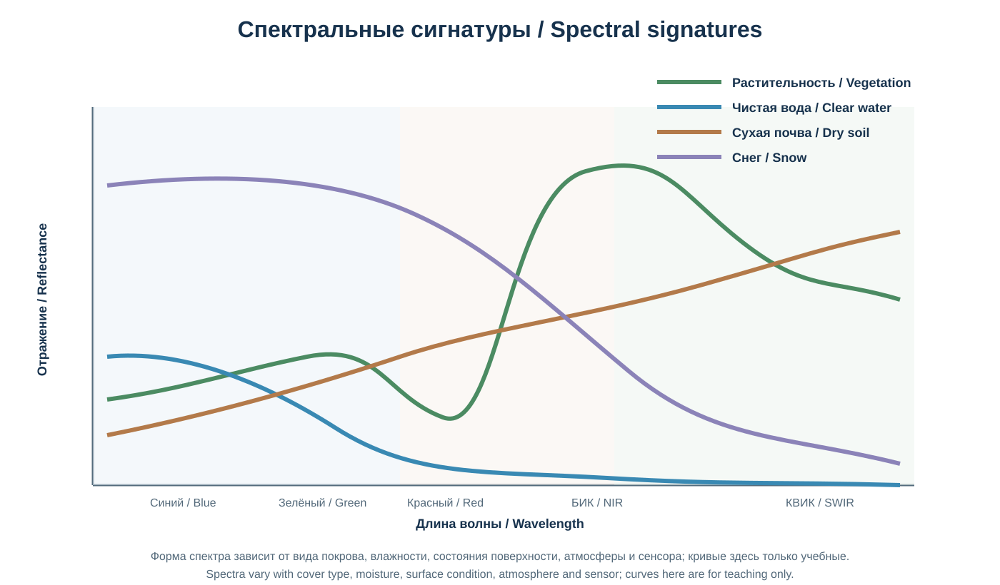
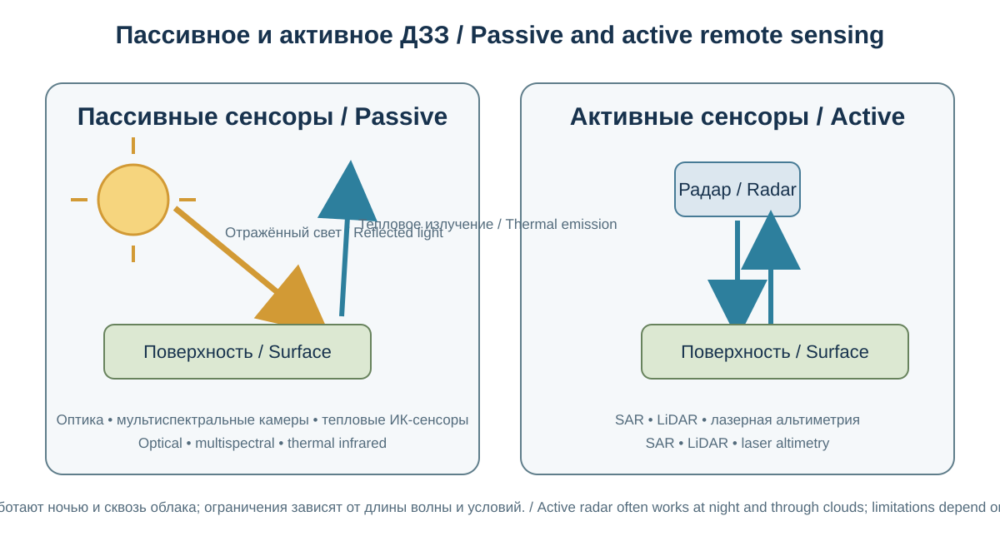
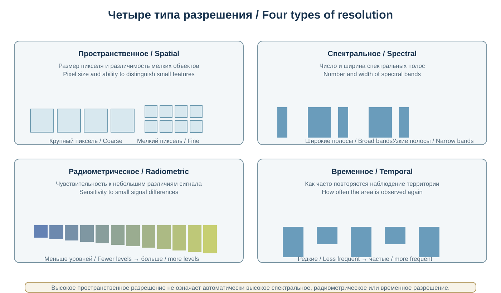
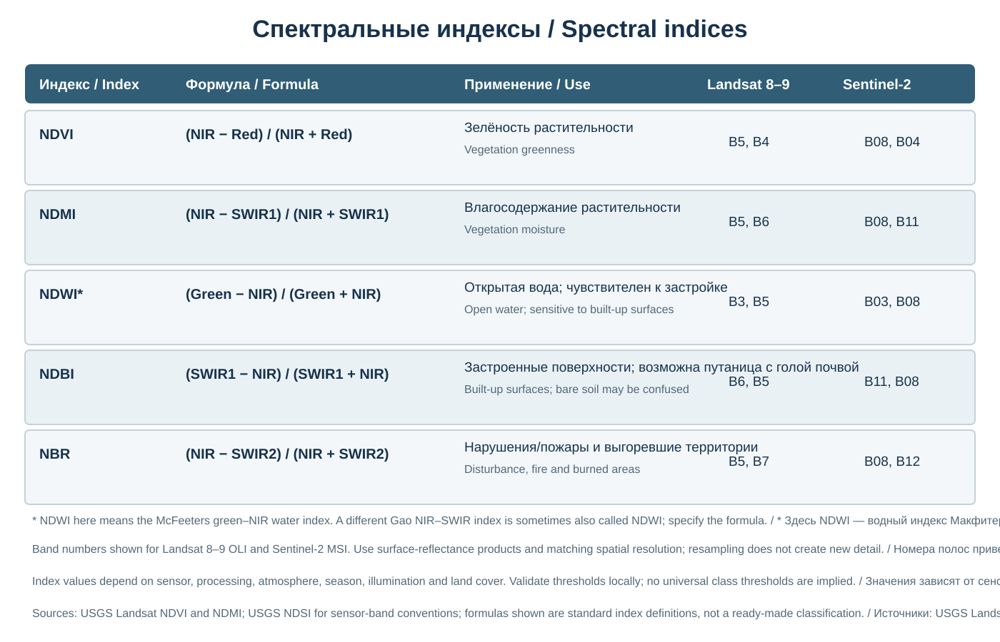
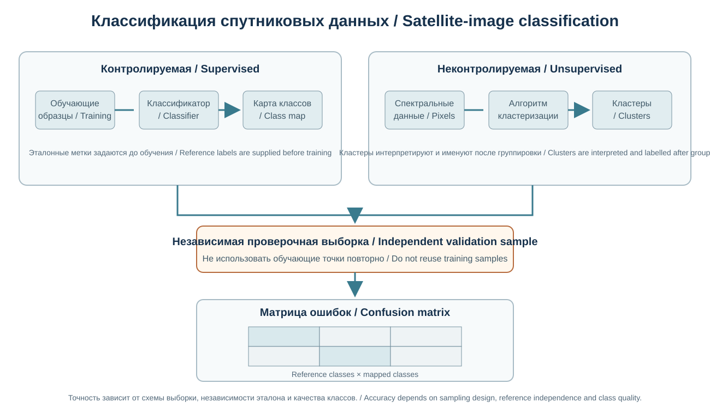
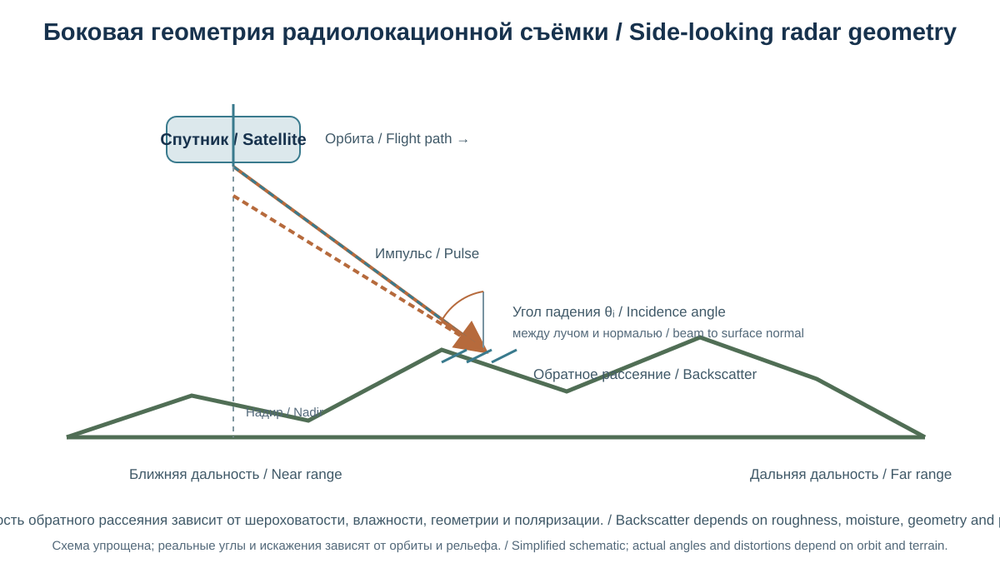
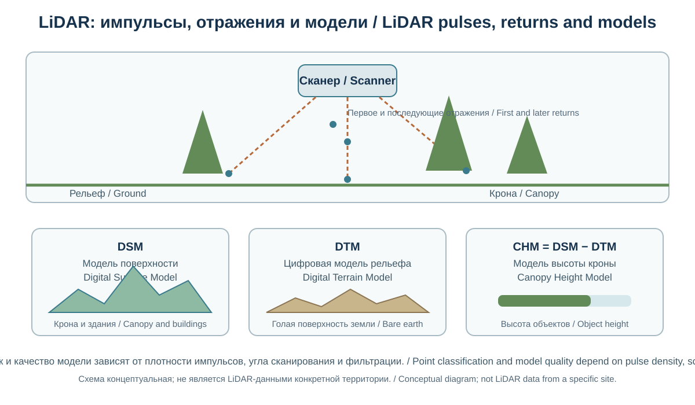
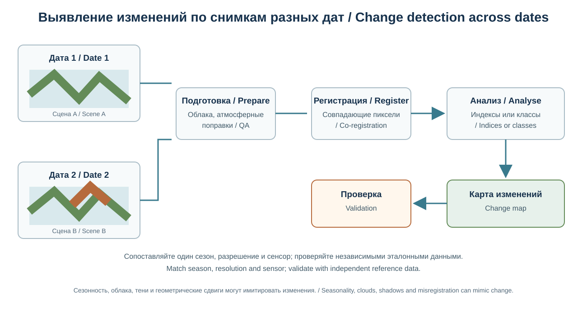

Глава 15. Дистанционное зондирование Земли
Chapter 15. Remote Sensing of the Earth
Часть III. Современная география и технологии / Part III. Modern Geography and Technology
Научно-образовательный атлас географии / Scientific and Educational Geography Atlas
Цели главыChapter objectives
Дистанционное зондирование Земли (ДЗЗ) — получение информации о поверхности и атмосфере без непосредственного контакта с исследуемым объектом, преимущественно с помощью датчиков на спутниках, самолётах и беспилотных летательных аппаратах. Данные ДЗЗ позволяют наблюдать большие территории, повторять измерения во времени и изучать процессы, труднодоступные для наземных обследований.
Глава рассматривает физические основы дистанционного зондирования, электромагнитный спектр, активные и пассивные сенсоры, спутниковые программы, пространственное и временное разрешение, предварительную обработку, спектральные индексы, классификацию, радарные наблюдения, мониторинг изменений и ограничения интерпретации.
Remote sensing of the Earth is the acquisition of information about the surface and atmosphere without direct physical contact, primarily using sensors carried by satellites, aircraft and uncrewed aerial vehicles. Remote sensing data enable large-area observation, repeated measurements and the study of processes that are difficult to investigate through field surveys alone.
This chapter introduces the physical principles of remote sensing, the electromagnetic spectrum, active and passive sensors, satellite programmes, spatial and temporal resolution, preprocessing, spectral indices, classification, radar observations, change detection and interpretation limits.
15.1. Понятие и значение ДЗЗConcept and Importance of Remote Sensing

Показан пассивный оптический путь; тепловое ДЗЗ и активный SAR используют иные физические режимы регистрации.The passive optical pathway is shown; thermal remote sensing and active SAR use different sensing modes.
Дистанционное зондирование основано на регистрации электромагнитного излучения, отражённого, испускаемого или рассеянного объектами и атмосферой. По измеренным сигналам можно получать сведения о свойствах поверхности, растительности, воде, снегу, льде, облачности, температуре и изменениях землепользования.
Основные платформы: - спутники: обеспечивают регулярное наблюдение больших территорий и глобальный охват; - самолёты: позволяют выполнять съёмку с гибким выбором высоты, сенсора и времени; - беспилотные летательные аппараты (БПЛА): дают детальные изображения локальных участков, но имеют ограничения по площади, погоде, разрешениям на полёты и времени работы; - наземные и стационарные платформы: используются для калибровки, проверки и локального мониторинга.
ДЗЗ дополняет полевые исследования, а не заменяет их. Спутниковый сигнал требует интерпретации и проверки, особенно если речь идёт о конкретном виде растений, типе почвы, причине изменения или юридическом статусе территории.
Remote sensing is based on recording electromagnetic radiation reflected, emitted or scattered by objects and the atmosphere. The measured signals can provide information about surface properties, vegetation, water, snow, ice, cloud cover, temperature and land-use change.
The main platforms are: - satellites: provide regular observations over large areas and global coverage; - aircraft: allow surveys with flexible choices of altitude, sensor and timing; - uncrewed aerial vehicles (UAVs): provide detailed imagery of local areas but are limited by coverage, weather, flight permissions and operating time; and - ground-based and stationary platforms: support calibration, validation and local monitoring.
Remote sensing complements field research; it does not replace it. Satellite signals require interpretation and validation, especially when identifying a particular plant species, soil type, cause of change or legal status of a territory.
15.2. Электромагнитное излучение и спектральные диапазоныElectromagnetic Radiation and Spectral Regions

Оригинальная двуязычная схема; диапазоны приблизительны, границы зависят от принятой классификации и характеристик сенсора.Original bilingual diagram; ranges are approximate and boundaries depend on classification and sensor specifications.
Электромагнитное излучение характеризуется длиной волны и частотой. В дистанционном зондировании применяют видимый свет, ближний и коротковолновый инфракрасный диапазоны, тепловое инфракрасное излучение и микроволны.
Основные диапазоны: - видимый: примерно 0,4–0,7 мкм; воспринимаемые человеком цвета; - ближний инфракрасный (NIR): примерно 0,7–1,3 мкм; чувствителен к структуре и состоянию растительности; - коротковолновый инфракрасный (SWIR): примерно 1,3–3 мкм; полезен для анализа влажности, минералов, пожаров и некоторых характеристик поверхности; - тепловой инфракрасный (TIR): диапазон длин волн, используемый для оценки собственного теплового излучения поверхности; - микроволновый: радиодиапазон, применяемый в радиолокационных системах и некоторых пассивных наблюдениях.
Границы диапазонов условны и зависят от принятой классификации и характеристик сенсора. Атмосфера поглощает излучение в определённых спектральных областях, поэтому спутниковые датчики часто используют атмосферные «окна», где передача сигнала сравнительно благоприятна.
Electromagnetic radiation is characterised by wavelength and frequency. Remote sensing uses visible light, near-infrared and shortwave-infrared regions, thermal infrared radiation and microwaves.
The main regions include: - visible: approximately 0.4–0.7 μm; the colours perceived by human vision; - near-infrared (NIR): approximately 0.7–1.3 μm; sensitive to vegetation structure and condition; - shortwave infrared (SWIR): approximately 1.3–3 μm; useful for analysing moisture, minerals, fires and some surface properties; - thermal infrared (TIR): wavelengths used to estimate the surface's own thermal emission; and - microwave: the radio-frequency region used by radar systems and some passive observations.
Band boundaries are approximate and depend on the classification and sensor specifications. The atmosphere absorbs radiation in particular spectral regions, so satellite sensors often use atmospheric “windows” where transmission is relatively favourable.
15.3. Отражение, поглощение и спектральная сигнатураReflection, Absorption and Spectral Signature

Кривые качественные и не являются измеренными спектрами; реальные сигнатуры зависят от влажности, состава, сезона и атмосферы.Curves are qualitative, not measured spectra; real signatures depend on moisture, composition, season and atmosphere.
Когда излучение достигает поверхности, часть энергии отражается, часть поглощается, а часть может проходить через материал. Соотношение зависит от длины волны, состава, влажности, структуры и состояния объекта.
Спектральная сигнатура — характерная зависимость отражательной способности или излучения объекта от длины волны. Она помогает различать типы поверхности, но не является уникальным «отпечатком» при любых условиях.
Примеры: - здоровая зелёная растительность обычно сильно поглощает красный свет хлорофиллом и отражает значительную долю ближнего инфракрасного излучения; - вода обычно имеет низкую отражательную способность в ближнем инфракрасном диапазоне, но результат зависит от мутности, глубины, взвесей и отражения неба; - сухая почва и влажная почва часто различаются по спектральному отклику, особенно в инфракрасных диапазонах; - снег и лёд имеют характерные спектральные свойства, но загрязнение, размер кристаллов и жидкая вода меняют отражение.
На спектральный сигнал влияют атмосфера, угол освещения, угол наблюдения, рельеф, тени, сезон и калибровка датчика. Поэтому сравнение снимков требует контроля условий съёмки.
When radiation reaches a surface, some energy is reflected, some is absorbed and some may pass through the material. The proportions depend on wavelength, composition, moisture, structure and the condition of the object.
A spectral signature is the characteristic variation of an object's reflectance or emission with wavelength. It helps distinguish surface types, but it is not a unique “fingerprint” under all conditions.
Examples: - healthy green vegetation usually absorbs much of the red light through chlorophyll and reflects a substantial proportion of near-infrared radiation; - water usually has low reflectance in the near-infrared, although the result depends on turbidity, depth, suspended matter and sky reflection; - dry and wet soils often have different spectral responses, especially in infrared regions; and - snow and ice have characteristic spectral properties, but impurities, crystal size and liquid water alter reflectance.
The atmospheric signal, illumination angle, viewing angle, relief, shadows, season and sensor calibration all affect the measured spectrum. Comparisons between images therefore require control of acquisition conditions.
15.4. Пассивные и активные сенсорыPassive and Active Sensors
Пассивное зондированиеPassive sensing
Пассивные сенсоры регистрируют естественное излучение: отражённое солнечное или собственное тепловое излучение Земли. Оптические мультиспектральные и гиперспектральные камеры — распространённые примеры пассивных систем.
Ограничения оптических наблюдений: - облака и дым закрывают поверхность; - освещение зависит от времени суток и сезона; - тени и рельеф усложняют сравнение; - часть спектральных диапазонов сильно поглощается атмосферой.
Активное зондированиеActive sensing
Активный сенсор сам излучает сигнал и регистрирует его отражение или рассеяние. Примеры — радар с синтезированной апертурой (SAR) и лазерное сканирование LiDAR.
Активные системы могут работать независимо от солнечного освещения. Радарные микроволны во многих случаях позволяют получать данные сквозь облачность, однако сигнал зависит от влажности, шероховатости, геометрии наблюдения и структуры объектов. LiDAR измеряет время прохождения лазерного импульса и позволяет получать трёхмерные сведения о поверхности и объектах.
Passive sensing
Passive sensors record natural radiation: reflected sunlight or the Earth's own thermal emission. Optical multispectral and hyperspectral cameras are common examples of passive systems.
Limitations of optical observations include: - clouds and smoke can obscure the surface; - illumination depends on time of day and season; - shadows and relief complicate comparisons; and - some spectral regions are strongly absorbed by the atmosphere.
Active sensing
An active sensor transmits its own signal and records the reflected or scattered response. Examples include synthetic-aperture radar (SAR) and LiDAR laser scanning.
Active systems can operate independently of sunlight. Radar microwaves often allow observations through cloud cover, but the signal depends on moisture, surface roughness, viewing geometry and the structure of objects. LiDAR measures the travel time of a laser pulse and can provide three-dimensional information about the surface and objects.
15.5. Типы спутниковых данных и сенсоровSatellite Data and Sensor Types

Оригинальная двуязычная схема; возможности и ограничения сенсоров зависят от длины волны, прибора и условий наблюдения.Original bilingual diagram; sensor capabilities and limitations depend on wavelength, instrument and observing conditions.
EN: Diagram of satellite platforms and passive/active sensors, with examples of optical, thermal and radar data.
Спутниковые сенсоры различаются по спектральным каналам, пространственному разрешению, полосе захвата, частоте повторного наблюдения и радиометрической чувствительности.
Основные типы: - панхроматические: один широкий спектральный канал, часто с более высоким пространственным разрешением; - мультиспектральные: несколько относительно широких каналов; - гиперспектральные: десятки или сотни узких, смежных спектральных каналов; - тепловые: регистрируют тепловое излучение поверхности; - радиолокационные: измеряют обратное рассеяние микроволнового сигнала; - альтиметрические и лидарные: измеряют высоту поверхности, расстояния или структуру объектов.
Примеры широко используемых программ и миссий: - Landsat — длительный архив наблюдений суши, совместная программа NASA и USGS; - Sentinel — семейство миссий программы Copernicus Европейского союза и Европейского космического агентства; - MODIS — приборы на спутниках Terra и Aqua, обеспечивающие частые глобальные наблюдения; - VIIRS — приборы для наблюдения поверхности, облаков, температуры и ночных огней; - Sentinel-1 — радарная миссия SAR; - Sentinel-2 — оптическая мультиспектральная съёмка суши; - Sentinel-3 — наблюдения океана, суши и температуры поверхности; - ICESat-2 — спутниковая лазерная альтиметрия; - WorldView и другие коммерческие системы — высокодетальные данные с условиями доступа, зависящими от поставщика.
По состоянию на 5 ноября 2026 года важно учитывать изменение состава группировки Sentinel-1: Sentinel-1B завершил работу в 2022 году, Sentinel-1A — 30 июня 2026 года; Sentinel-1C и Sentinel-1D введены в эксплуатацию и обеспечивают продолжение радарной миссии. Поэтому название «Sentinel-1» обозначает программу/группировку, а не означает, что все её спутники действуют одновременно. Статус, доступность каналов и технические параметры необходимо проверять по актуальной документации операторов.
15.6. Четыре вида разрешенияFour Types of Resolution

Пространственное, спектральное, радиометрическое и временное разрешение — разные характеристики; улучшение одной не гарантирует улучшения остальных.Spatial, spectral, radiometric and temporal resolution are distinct properties; improving one does not guarantee improvement in the others.
Для интерпретации данных важно различать четыре характеристики.
Пространственное разрешение — размер элемента изображения на местности или степень детализации. Пиксель 10 м представляет участок поверхности, а не обязательно отдельный объект размером 10 м.
Спектральное разрешение — число, ширина и расположение спектральных каналов. Узкие и многочисленные каналы позволяют анализировать тонкие спектральные различия.
Временное разрешение — интервал повторного наблюдения одной территории. Фактическая частота пригодных снимков зависит от облачности, орбиты, режима съёмки и доступности данных.
Радиометрическое разрешение — способность сенсора различать уровни интенсивности сигнала, обычно связанная с числом бит цифрового представления и характеристиками прибора.
Высокое разрешение одного типа не гарантирует высокого разрешения другого. Для мониторинга быстро меняющихся процессов частые наблюдения могут быть важнее очень мелкого пикселя.
Four characteristics are important when interpreting remote-sensing data.
Spatial resolution is the ground size of an image element or the level of detail. A 10 m pixel represents an area on the ground; it does not necessarily represent a separate object exactly 10 m across.
Spectral resolution is the number, width and position of spectral bands. Narrower and more numerous bands can reveal finer spectral differences.
Temporal resolution is the interval between observations of the same area. The actual frequency of usable images also depends on cloud cover, orbit, acquisition mode and data availability.
Radiometric resolution is the ability of a sensor to distinguish signal-intensity levels. It is commonly related to the number of bits used in digital representation and to the characteristics of the instrument.
High resolution in one dimension does not guarantee high resolution in another. For monitoring rapidly changing processes, frequent observations may be more important than a very small pixel size.
15.7. Геометрическая и радиометрическая обработкаGeometric and Radiometric Preprocessing
Исходные спутниковые данные могут содержать геометрические и радиометрические искажения. Перед анализом обычно выполняют подготовительные операции.
Основные этапы: 1. проверка метаданных, даты, сенсора и уровня обработки; 2. геометрическая коррекция и ортотрансформирование, если они необходимы; 3. радиометрическая калибровка цифровых значений; 4. атмосферная коррекция для получения сопоставимых оценок отражения поверхности; 5. маскирование облаков, теней и нежелательных областей; 6. коррекция влияния рельефа для горных территорий, если это требуется; 7. приведение данных к общей сетке, проекции и пространственному разрешению; 8. контроль качества и документирование параметров.
Не все продукты требуют одинаковой обработки. Например, готовый продукт поверхностного отражения уже прошёл определённые этапы коррекции. Повторная обработка без понимания уровня продукта может ухудшить данные. Для конкретного примера: в продуктах Landsat Collection 2 Level-2 Surface Reflectance цифровые значения преобразуют в отражательную способность по формуле SR = DN × 0,0000275 − 0,2; также необходимо использовать соответствующие каналы контроля качества (QA_PIXEL, QA_RADSAT и предусмотренные для данного сенсора дополнительные QA-слои). Эти коэффициенты и битовые маски относятся к указанному продукту Landsat и не должны автоматически переноситься на другие сенсоры или коллекции.
Raw satellite data may contain geometric and radiometric distortions. A set of preprocessing operations is normally carried out before analysis.
Common steps include: 1. checking metadata, acquisition date, sensor and processing level; 2. geometric correction and orthorectification, where required; 3. radiometric calibration of digital values; 4. atmospheric correction to obtain comparable surface-reflectance estimates; 5. masking clouds, shadows and unwanted areas; 6. correcting terrain effects in mountainous areas, where necessary; 7. aligning data to a common grid, projection and spatial resolution; and 8. quality control and documentation of parameters.
Not all products require the same processing. For example, a surface-reflectance product has already undergone specific correction steps. Reprocessing without understanding the product level may degrade the data. In Landsat Collection 2 Level-2 Surface Reflectance products, digital values are converted to reflectance using the formula SR = DN × 0.0000275 − 0.2; the corresponding quality-assurance layers (QA_PIXEL, QA_RADSAT and any sensor-specific QA layers) must also be used. These coefficients and bit masks apply to the specified Landsat product and should not automatically be transferred to other sensors or collections.
15.8. Цветовые композиции и визуальная интерпретацияColour Composites and Visual Interpretation

Для готового Level-2 продукта часть обработки уже выполнена; всегда проверяйте коллекцию, масштабный коэффициент, смещение и QA-маски.Some processing is already complete in Level-2 products; always check collection, scale factor, offset and QA masks.
Мультиспектральные снимки часто отображают как цветовые композиции, назначая отдельные спектральные каналы красному, зелёному и синему цветам экрана.
Естественная цветовая композиция использует каналы видимого диапазона и приближает изображение к привычному зрению. Ложная цветовая композиция назначает каналам условные цвета, чтобы выделить нужные свойства.
Например, назначение ближнего инфракрасного канала красному экранному каналу позволяет сделать растительность яркой, поскольку она часто сильно отражает NIR. Но цвет на ложной композиции не является реальным цветом объекта.
Визуальная интерпретация учитывает: - тон и цвет; - текстуру; - форму; - размер; - тень; - рисунок и пространственное положение; - контекст соседних объектов; - сезон и условия съёмки.
Один и тот же объект может выглядеть по-разному в зависимости от сенсора, композиции и даты.
Multispectral images are often displayed as colour composites by assigning individual spectral bands to the red, green and blue channels of a screen.
A true-colour composite uses visible bands and approximates how human vision perceives a scene. A false-colour composite assigns selected bands to artificial display colours to emphasise particular surface properties.
For example, assigning the near-infrared band to the red display channel can make vegetation appear bright because vegetation often strongly reflects NIR radiation. However, a colour in a false-colour composite is not the object's actual visible colour.
Visual interpretation considers: - tone and colour; - texture; - shape; - size; - shadow; - pattern and spatial position; - the context of neighbouring features; and - season and acquisition conditions.
The same object may look different depending on the sensor, composite and acquisition date.
15.9. Спектральные индексыSpectral Indices

Формулы приведены для Landsat 8–9 и Sentinel-2; NDWI здесь означает индекс Макфитерса Green–NIR.Formulas are shown for Landsat 8–9 and Sentinel-2; NDWI here means the McFeeters Green–NIR index.
Спектральные индексы — математические комбинации каналов, предназначенные для усиления определённых различий в данных. Они помогают предварительно оценивать состояние растительности, водных объектов, застроенных территорий и другие характеристики.
NDVI — нормализованный разностный вегетационный индекс
[ NDVI = \frac{NIR - Red}{NIR + Red} ]
NDVI широко применяется для оценки относительной активности зелёной растительности. Значения обычно лежат в диапазоне от −1 до +1, но интерпретация зависит от сенсора, поверхности, сезона и обработки.
Ограничения NDVI: - насыщение в густой растительности; - влияние почвенного фона при редком растительном покрове; - чувствительность к атмосфере и теням; - невозможность напрямую определить вид растения или точную биомассу без дополнительных данных.
NDWI и водные индексыWater indices
Под названием NDWI используются разные формулы. Один вариант, предложенный для выделения открытой воды, сочетает зелёный и ближний инфракрасный каналы:
[ NDWI = \frac{Green - NIR}{Green + NIR} ]
Другой индекс, часто называемый NDMI или вариантом NDWI для влажности растительности, использует NIR и SWIR:
[ NDMI = \frac{NIR - SWIR1}{NIR + SWIR1} ]
В публикации индекса всегда указывать формулу и используемые каналы: одинаковое сокращение в разных источниках может обозначать разные показатели.
NDBI — индекс застроенных территорийBuilt-up Index
[ NDBI = \frac{SWIR1 - NIR}{SWIR1 + NIR} ]
NDBI может помогать выделять застроенные участки, но спектрально похожие сухие почвы, горные породы и другие поверхности могут давать сходный отклик. Индекс не является готовой картой зданий.
NBR — нормализованный индекс выгоревших территорийBurn Ratio
[ NBR = \frac{NIR - SWIR2}{NIR + SWIR2} ]
Разность NBR до и после пожара (dNBR) используется для оценки изменений, связанных с выгоранием. Интерпретация требует учитывать сезон, влажность, тип растительности и другие причины спектральных изменений. Для стандартной реализации NBR на Landsat обычно используют NIR и SWIR2; для NDMI и NDBI — соответствующие каналы NIR/SWIR1 и SWIR1/NIR. Для других сенсоров необходимо сверяться с руководством продукта и указывать номера полос.
15.10. Классификация спутниковых изображенийSatellite Image Classification

Проверочная выборка должна быть независимой от обучающих данных.Validation samples must be independent of training data.
Классификация присваивает пикселям или объектам категории земного покрова или другие тематические классы.
Основные подходы: - контролируемая классификация: алгоритм обучается на заранее размеченных примерах; - неконтролируемая классификация: алгоритм группирует пиксели по сходству спектральных характеристик; - объектно-ориентированный анализ: классифицируются сегменты или объекты, а не отдельные пиксели; - машинное обучение: используются алгоритмы, например Random Forest, Support Vector Machine и нейронные сети.
Типичные классы земного покрова: лес, кустарник, пашня, пастбище, застройка, вода, снег и лёд, голая почва. Схема классов должна соответствовать цели и масштабу проекта.
Обучающие и проверочные данныеTraining and validation data
Обучающие образцы используются для настройки модели, а независимые проверочные данные — для оценки качества классификации. Если одни и те же участки используются и для обучения, и для проверки, точность может быть завышена.
Матрица ошибок (confusion matrix) показывает совпадения и расхождения между классификацией и эталонными данными. Общая точность не раскрывает все ошибки: важно анализировать точность пользователя и производителя по классам, а также учитывать дисбаланс классов и дизайн выборки.
Classification assigns pixels or objects to land-cover categories or other thematic classes.
Main approaches include: - supervised classification: the algorithm is trained using pre-labelled examples; - unsupervised classification: the algorithm groups pixels by similarity in spectral characteristics; - object-based analysis: segments or objects are classified rather than individual pixels; and - machine learning: algorithms such as Random Forest, Support Vector Machine and neural networks are used.
Typical land-cover classes include forest, shrubland, cropland, pasture, built-up areas, water, snow and ice, and bare soil. The class scheme should match the purpose and scale of the project.
Training and validation data
Training samples are used to fit the model, while independent validation data are used to assess classification quality. If the same areas are used for both training and validation, the estimated accuracy may be too high.
A confusion matrix shows agreement and disagreement between the classification and reference data. Overall accuracy does not reveal every type of error: it is important to examine user's and producer's accuracy for each class and to account for class imbalance and the sampling design.
15.11. Радарное зондирование и SARRadar Remote Sensing and SAR

Угол падения определяется между лучом и нормалью к поверхности.Incidence angle is measured between the radar beam and the surface normal.
Радар с синтезированной апертурой (SAR) использует микроволновые импульсы и регистрирует обратное рассеяние от поверхности. Радарные данные особенно полезны там, где оптические наблюдения ограничены облачностью или отсутствием солнечного освещения.
Сигнал SAR зависит от: - шероховатости поверхности относительно длины волны; - влажности почвы и растительности; - геометрии объекта и угла наблюдения; - структуры лесного покрова; - поляризации сигнала; - длины волны и параметров сенсора.
Применения SAR: - картирование затоплений; - мониторинг деформаций поверхности методом интерферометрии; - оценка влажности и состояния почв при подходящих условиях; - наблюдение лесов и сельскохозяйственных угодий; - мониторинг ледников и морского льда; - обнаружение изменений инфраструктуры.
Радарное изображение не является фотографией в обычном смысле. Яркость пикселя отражает особенности обратного рассеяния и геометрии, поэтому интерпретация требует специальных знаний.
Synthetic-aperture radar (SAR) uses microwave pulses and records the backscatter from the surface. Radar data are especially useful where optical observations are limited by cloud cover or the absence of sunlight.
The SAR signal depends on: - surface roughness relative to the wavelength; - soil and vegetation moisture; - object geometry and viewing angle; - forest-canopy structure; - signal polarisation; and - wavelength and sensor parameters.
SAR applications include: - flood mapping; - monitoring surface deformation using interferometry; - estimating soil moisture under suitable conditions; - observing forests and agricultural land; - monitoring glaciers and sea ice; and - detecting changes in infrastructure.
A radar image is not a photograph in the usual sense. Pixel brightness reflects backscatter properties and geometry, so interpretation requires specialist knowledge.
15.12. LiDAR и трёхмерное зондированиеLiDAR and Three-dimensional Remote Sensing

DSM описывает верхние поверхности; DTM — рельеф земли без объектов.DSM represents top surfaces; DTM represents bare-earth terrain.
LiDAR (Light Detection and Ranging) измеряет расстояние по времени прохождения лазерного импульса. Системы могут быть установлены на самолётах, БПЛА, автомобилях или спутниках.
Результат часто представляется облаком точек, где каждая точка имеет координаты и дополнительные атрибуты. По облаку точек можно создавать: - цифровую модель поверхности (DSM); - цифровую модель рельефа (DTM); - модели зданий и растительности; - профили и трёхмерные представления объектов.
Лазерные импульсы могут частично проходить через промежутки в растительном покрове, позволяя получать отражения от разных уровней полога и поверхности земли. Однако плотность точек, характеристики сенсора и алгоритмы классификации определяют качество результата.
LiDAR (Light Detection and Ranging) measures distance from the travel time of a laser pulse. Systems can be mounted on aircraft, UAVs, vehicles or satellites.
The output is often represented as a point cloud in which each point has coordinates and additional attributes. Point clouds can be used to create: - a digital surface model (DSM); - a digital terrain model (DTM); - building and vegetation models; and - profiles and three-dimensional representations of features.
Laser pulses may pass through gaps in vegetation and return signals from different canopy levels and the ground surface. However, point density, sensor characteristics and classification algorithms determine the quality of the result.
15.13. Мониторинг изменений и временные рядыChange Detection and Time Series

Сопоставляйте сезон, сенсор и разрешение; проверяйте изменения независимыми данными.Match season, sensor and resolution; validate change with independent data.
Мониторинг изменений сравнивает данные разных дат для выявления преобразований поверхности и природных процессов.
Основные методы: - сравнение классифицированных карт; - вычитание и нормализация спектральных каналов; - анализ изменений индексов; - временные профили пикселей; - объектный анализ; - статистические методы обнаружения трендов и сезонности.
Перед сравнением важно обеспечить: - сопоставимые сезоны и фенологические стадии; - одинаковую или согласованную систему координат; - сопоставимые пространственные разрешения; - радиометрическую и атмосферную согласованность; - одинаковую схему классов; - маскирование облаков, теней и снега, если они не являются предметом анализа.
Изменение спектрального сигнала не всегда означает изменение земного покрова. Оно может быть вызвано влажностью, сезоном, углом наблюдения, атмосферой или различиями сенсоров.
15.13.1. Практический пример: сезонность или реальное изменение земного покрова?Worked Example: Seasonality or Actual Land-cover Change?
Предположим, на спутниковом снимке одного участка в июле растительность выглядит значительно зеленее, чем на снимке того же участка в марте. Нельзя сразу заключать, что площадь леса увеличилась или экосистема восстановилась: разница может объясняться сезонным развитием растений, сроками сельскохозяйственных работ, влажностью почвы, облачностью, тенями или различиями обработки изображений.
Для проверки следует:
- Сопоставить снимки одного и того же сезона в разные годы, если задача — выявить долгосрочное изменение.
- Использовать одинаковые или сопоставимые сенсоры, пространственное разрешение и методы атмосферной коррекции.
- Проверить геометрическое совмещение снимков: смещение даже на несколько пикселей может создать ложные границы изменений.
- Маскировать облака, тени и снег, а также учитывать сезонные особенности территории.
- Сравнить результат с полевыми наблюдениями, более детальными изображениями или независимыми данными.
Если сравниваются разные сезоны, вывод следует формулировать как сезонное различие спектрального отклика, пока нет дополнительных доказательств долговременного изменения земного покрова.
Suppose vegetation on a satellite image of a site appears much greener in July than in March. It is not safe to conclude immediately that forest area has increased or that an ecosystem has recovered. The difference may reflect seasonal plant growth, agricultural calendars, soil moisture, cloud cover, shadows or differences in image processing.
To investigate the change:
- Compare images from the same season in different years when the goal is to detect long-term change.
- Use the same or comparable sensors, spatial resolution and atmospheric-correction methods.
- Check geometric co-registration: a shift of even a few pixels can create false change boundaries.
- Mask clouds, shadows and snow, and account for the seasonal characteristics of the area.
- Compare the result with field observations, higher-resolution imagery or independent datasets.
When different seasons are compared, describe the result as a seasonal difference in spectral response unless additional evidence supports a long-term land-cover change.
15.14. ДЗЗ для изучения природных опасностей и чрезвычайных ситуацийRemote Sensing for Hazards and Disasters
Данные ДЗЗ помогают до, во время и после чрезвычайных ситуаций: - картировать площади затопления; - выявлять следы лесных и степных пожаров; - оценивать последствия оползней и землетрясений; - наблюдать движение ледников и изменения ледниковых озёр; - отслеживать пыльные бури и вулканические выбросы; - оценивать ущерб сельскому хозяйству и инфраструктуре.
Для оперативного реагирования важны скорость получения данных, доступность снимков, облачность, разрешение и надёжность классификации. Спутниковая карта должна сопровождаться временем съёмки: изображение, полученное после прохождения паводковой волны, может не отражать максимальную площадь затопления.
ДЗЗ следует сочетать с наземными наблюдениями, метеорологическими данными, сообщениями служб и проверенными сведениями о населении и инфраструктуре.
Remote-sensing data support work before, during and after emergencies. They can be used to: - map flooded areas; - identify the extent of forest and steppe fires; - assess the effects of landslides and earthquakes; - observe glacier movement and changes in glacial lakes; - monitor dust storms and volcanic emissions; and - assess damage to agriculture and infrastructure.
For emergency response, the speed of data delivery, image availability, cloud cover, spatial resolution and classification reliability are important. A satellite map must state the acquisition time: an image captured after a flood wave has passed may not show the maximum inundated area.
Remote sensing should be combined with ground observations, meteorological data, reports from emergency services and verified information about population and infrastructure.
15.15. Ограничения, неопределённость и этика ДЗЗLimitations, Uncertainty and Ethics
Данные дистанционного зондирования имеют ограничения: - облачность, дым, туман и атмосферные помехи; - различия сенсоров и алгоритмов; - смешанные пиксели на границах объектов; - сезонные и угловые эффекты; - недостаток эталонных наземных наблюдений; - неопределённость классификации и моделей; - задержки публикации и ограничения доступа.
Этические вопросы включают наблюдение за частными территориями, защиту персональных данных, безопасность объектов, права коренных народов и местных сообществ, а также риск неверного использования карт и аналитики.
Коммерческая доступность снимка не отменяет требований законодательства, лицензии и ответственного обращения с данными. Для публикации чувствительных координат следует оценивать возможный вред.
15.15.1. Как отличать реальное изменение от различий съёмкиSeparating Real Change from Image Differences
Разность двух спутниковых изображений не всегда означает изменение земной поверхности. Снимки могли быть получены в разные сезоны, при разной облачности, освещённости, влажности почвы, угле наблюдения или разными сенсорами.
Перед сравнением проверяют геометрическую регистрацию, сопоставимость сезонов и дат, маски облаков и теней, атмосферную коррекцию, разрешение, спектральные диапазоны и радиометрическую калибровку. Необходимо документировать алгоритм и порог обнаружения изменений.
В горах интерпретацию усложняют снег, тени склонов и различия сезонного развития растительности по высотным поясам. Например, снижение растительного индекса летом по сравнению с весной может отражать сезонную фенологию, а не деградацию пастбища.
Проверка. Выборочные полевые наблюдения, геопривязанные фотографии и независимые данные помогают подтвердить интерпретацию. Для классификации используют матрицу ошибок по независимой выборке; общая точность может скрывать слабое распознавание редких классов.
Задание. Сравните два условных снимка одного водосбора, сделанных весной и летом. Перечислите факторы, которые нужно контролировать, прежде чем объявлять снижение растительного индекса деградацией, и предложите способ проверки на местности.
A difference between two satellite images does not always indicate a change on the Earth's surface. Images may have been acquired in different seasons, under different cloud, illumination, soil-moisture or viewing-angle conditions, or by different sensors.
Before comparison, check geometric registration, comparable seasons and dates, cloud and shadow masks, atmospheric correction, resolution, spectral bands and radiometric calibration. Document the change-detection algorithm and threshold.
In mountain areas, snow, slope shadows and seasonal vegetation differences across elevation belts complicate interpretation. For example, a lower vegetation index in summer than in spring may reflect seasonal phenology rather than pasture degradation.
Validation. Sample field observations, georeferenced photographs and independent data help confirm an interpretation. Classification should be assessed with an error matrix based on an independent sample; overall accuracy may conceal poor detection of rare classes.
Activity. Compare two hypothetical images of the same catchment acquired in spring and summer. List the factors to control before interpreting a lower vegetation index as degradation, and propose a field-validation method.
15.1. Concept and Importance of Remote Sensing
Remote sensing is based on detecting electromagnetic radiation reflected, emitted or scattered by objects and the atmosphere. The measured signals can provide information about surface properties, vegetation, water, snow, ice, clouds, temperature and land-use change.
Main platforms include satellites, which provide regular observations over large areas and global coverage; aircraft, which allow flexible choices of altitude, sensor and timing; uncrewed aerial vehicles (UAVs), which provide detailed imagery of local areas but are limited by coverage, weather, flight permissions and operating time; and ground-based or stationary platforms used for calibration, validation and local monitoring.
Remote sensing complements field research rather than replacing it. Satellite signals require interpretation and validation, especially when identifying a particular plant species, soil type, cause of change or legal status of a territory.
15.2. Electromagnetic Radiation and Spectral Regions
Electromagnetic radiation is characterised by wavelength and frequency. Remote sensing uses visible light, near-infrared and shortwave-infrared regions, thermal infrared radiation and microwaves.
Approximate spectral regions include: - visible: about 0.4–0.7 μm, the colours perceived by the human eye; - near-infrared (NIR): about 0.7–1.3 μm, sensitive to vegetation structure and condition; - shortwave infrared (SWIR): about 1.3–3 μm, useful for analysing moisture, minerals, fires and some surface characteristics; - thermal infrared (TIR): wavelengths used to assess the surface's own thermal emission; and - microwave: the radio-frequency region used by radar systems and some passive observations.
Boundaries are approximate and depend on the classification and sensor characteristics. The atmosphere absorbs radiation in particular spectral regions, so satellite sensors often use atmospheric windows where transmission is relatively favourable.
15.3. Reflection, Absorption and Spectral Signatures
When radiation reaches a surface, some energy is reflected, some absorbed and some may pass through the material. The proportions depend on wavelength, composition, moisture, structure and surface condition.
A spectral signature is the characteristic variation of an object's reflectance or emission with wavelength. It helps distinguish surface types, but it is not a unique fingerprint under all conditions.
Examples: - healthy green vegetation usually absorbs red light strongly through chlorophyll and reflects a substantial share of near-infrared radiation; - water usually has low reflectance in the near-infrared, although turbidity, depth, suspended material and sky reflection affect the signal; - dry and wet soils often differ spectrally, particularly in infrared regions; and - snow and ice have characteristic spectral properties, but impurities, crystal size and liquid water change reflectance.
Atmosphere, illumination angle, viewing angle, relief, shadows, season and sensor calibration all affect the measured signal. Image comparison therefore requires control of acquisition conditions.
15.4. Passive and Active Sensors
Passive sensors detect natural radiation: reflected sunlight or Earth's own thermal emission. Optical multispectral and hyperspectral cameras are common examples.
Limitations of optical observations include cloud and smoke obstruction; illumination changes with time of day and season; shadows and relief complicate comparison; and some spectral regions are strongly absorbed by the atmosphere.
Active sensors emit their own signal and detect its reflection or scattering. Examples include Synthetic Aperture Radar (SAR) and laser scanning (LiDAR).
Active systems can operate independently of sunlight. Radar microwaves can often collect data through cloud cover, but the signal depends on moisture, surface roughness, viewing geometry and object structure. LiDAR measures the travel time of laser pulses and provides three-dimensional information about surfaces and objects.
15.5. Satellite Data and Sensor Types
Satellite sensors differ in spectral bands, spatial resolution, swath width, revisit frequency and radiometric sensitivity.
Main types include: - panchromatic: one broad spectral band, often with higher spatial resolution; - multispectral: several relatively broad bands; - hyperspectral: dozens or hundreds of narrow, contiguous bands; - thermal: sensors that detect thermal radiation from the surface; - radar: sensors that measure microwave backscatter; and - altimetric and LiDAR systems: sensors that measure surface height, distance or object structure.
Widely used missions include Landsat, a long-term land-observation archive operated by NASA and USGS; Sentinel, a family of missions within the European Union's Copernicus programme and the European Space Agency; MODIS on Terra and Aqua, which provides frequent global observations; VIIRS, used to observe the surface, clouds, temperature and night lights; Sentinel-1 for SAR; Sentinel-2 for optical multispectral land imaging; Sentinel-3 for ocean, land and surface-temperature observations; ICESat-2 for satellite laser altimetry; and commercial high-resolution systems such as WorldView.
As of 5 November 2026, the Sentinel-1 constellation has changed: Sentinel-1B ended operations in 2022 and Sentinel-1A ended operations on 30 June 2026; Sentinel-1C and Sentinel-1D are operational and continue the radar mission. “Sentinel-1” therefore refers to the mission/constellation, not to every satellite in the series being active at the same time. Always check current status, band availability and technical parameters against operator documentation.
15.6. Four Types of Resolution
Four characteristics should be distinguished when interpreting remote-sensing data.
Spatial resolution is the ground size of an image element or the level of detail. A 10 m pixel represents an area of the surface; it does not necessarily represent a separate object that is 10 m in size.
Spectral resolution is the number, width and position of spectral bands. Narrower and more numerous bands can reveal subtle spectral differences.
Temporal resolution is the interval between observations of the same area. The actual frequency of usable images depends on cloud cover, orbit, acquisition mode and data availability.
Radiometric resolution is the sensor's ability to distinguish signal-intensity levels, usually related to the number of digital bits and instrument characteristics.
High resolution in one dimension does not guarantee high resolution in another. For monitoring rapidly changing processes, frequent observations may be more important than very small pixels.
15.7. Geometric and Radiometric Preprocessing
Raw satellite data may contain geometric and radiometric distortions. Preprocessing commonly includes checking metadata, acquisition date, sensor and processing level; geometric correction and orthorectification where needed; radiometric calibration of digital values; atmospheric correction to obtain comparable surface-reflectance estimates; masking clouds, shadows and unwanted areas; terrain correction for mountainous areas where necessary; alignment to a common grid, projection and spatial resolution; and quality control with documentation of parameters.
Not all products require the same processing. For example, a surface-reflectance product has already undergone certain correction steps. Reprocessing without understanding the product level may degrade the data. As a specific example, Landsat Collection 2 Level-2 Surface Reflectance digital values are converted to reflectance using SR = DN × 0.0000275 − 0.2; the appropriate quality-assessment bands (QA_PIXEL, QA_RADSAT and sensor-specific additional QA layers) must also be used. These scale factors and bit masks apply to the specified Landsat product and must not be transferred automatically to other sensors or collections.
15.8. Colour Composites and Visual Interpretation
Multispectral images are often displayed as colour composites by assigning individual spectral bands to the red, green and blue channels of a screen.
A true-colour composite uses visible bands and approximates human vision. A false-colour composite assigns bands to artificial display colours to emphasise selected surface properties.
For example, assigning the near-infrared band to the screen's red channel can make vegetation appear bright because vegetation often strongly reflects NIR. The displayed colour in a false-colour composite is not the object's actual colour.
Visual interpretation considers tone and colour; texture; shape; size; shadow; pattern and spatial position; context of neighbouring features; season; and acquisition conditions.
The same feature may look different depending on sensor, band combination and acquisition date.
15.9. Spectral Indices
Spectral indices are mathematical combinations of bands designed to enhance particular differences in data. They can provide preliminary information about vegetation, water bodies, built-up areas and other surface characteristics.
NDVI — Normalized Difference Vegetation Index
NDVI = (NIR − Red) / (NIR + Red)
NDVI is widely used to assess the relative activity of green vegetation. Values generally range from −1 to +1, but interpretation depends on sensor, surface, season and processing.
Limitations include saturation in dense vegetation; influence of soil background where vegetation is sparse; sensitivity to atmosphere and shadows; and inability to identify plant species or exact biomass directly without additional data.
NDWI and water indices. The name NDWI is used for different formulas. One version, designed to identify open water, combines green and near-infrared bands:
NDWI = (Green − NIR) / (Green + NIR)
Another index, often called NDMI or an NDWI variant for vegetation moisture, uses NIR and SWIR:
NDMI = (NIR − SWIR1) / (NIR + SWIR1)
Always state the formula and bands used: the same abbreviation may refer to different indicators in different sources.
NDBI — Normalized Difference Built-up Index
NDBI = (SWIR1 − NIR) / (SWIR1 + NIR)
NDBI may help identify built-up areas, but spectrally similar dry soils, rocks and other surfaces can produce similar responses. It is not a ready-made building map.
NBR — Normalized Burn Ratio
NBR = (NIR − SWIR2) / (NIR + SWIR2)
The difference between pre-fire and post-fire NBR (dNBR) is used to assess changes associated with burning. Interpretation must account for season, moisture, vegetation type and other causes of spectral change. A standard Landsat NBR commonly uses NIR and SWIR2; NDMI and NDBI use the corresponding NIR/SWIR1 and SWIR1/NIR bands. For other sensors, consult the product guide and state the exact band numbers.
15.10. Satellite Image Classification
Classification assigns pixels or objects to land-cover or other thematic classes.
Main approaches include supervised classification, in which an algorithm is trained using labelled examples; unsupervised classification, in which the algorithm groups pixels by spectral similarity; object-based analysis, which classifies segments or objects rather than individual pixels; and machine learning, using algorithms such as Random Forest, Support Vector Machine and neural networks.
Typical land-cover classes include forest, shrubland, cropland, pasture, built-up areas, water, snow and ice, and bare soil. The class scheme should match the purpose and scale of the project.
Training and validation data. Training samples are used to fit the model; independent validation data are used to assess classification quality. If the same sites are used for both training and validation, accuracy may be overstated.
A confusion matrix shows agreement and disagreement between the classification and reference data. Overall accuracy does not reveal all errors: producer's and user's accuracy by class should be examined, taking class imbalance and sampling design into account.
15.11. Radar Remote Sensing and SAR
Synthetic Aperture Radar (SAR) uses microwave pulses and records backscatter from the surface. Radar data are especially useful where optical observations are limited by cloud cover or lack of sunlight.
The SAR signal depends on surface roughness relative to wavelength; soil and vegetation moisture; object geometry and viewing angle; forest structure; signal polarisation; wavelength; and sensor parameters.
Applications include flood mapping; surface-deformation monitoring using interferometry; soil-moisture and condition assessment under suitable conditions; forest and agricultural monitoring; glacier and sea-ice observation; and infrastructure-change detection.
A radar image is not an ordinary photograph. Pixel brightness reflects backscatter and viewing geometry, so interpretation requires specialist knowledge.
15.12. LiDAR and Three-dimensional Remote Sensing
LiDAR (Light Detection and Ranging) measures distance from the travel time of a laser pulse. Systems may be carried by aircraft, UAVs, vehicles or satellites.
The output is often represented as a point cloud, in which each point has coordinates and additional attributes. Point clouds can be used to create a Digital Surface Model (DSM), a Digital Terrain Model (DTM), building and vegetation models, profiles and three-dimensional representations.
Laser pulses may pass through gaps in vegetation and return from different canopy levels and the ground surface. Point density, sensor characteristics and classification algorithms determine the quality of the result.
15.13. Change Detection and Time Series
Change detection compares data from different dates to identify surface transformations and natural processes.
Methods include comparison of classified maps; subtraction and normalisation of spectral bands; analysis of index changes; pixel time profiles; object-based analysis; and statistical methods for identifying trends and seasonality.
Before comparison, ensure comparable seasons and phenological stages; the same or harmonised coordinate reference system; comparable spatial resolutions; radiometric and atmospheric consistency; a consistent class scheme; and masking of clouds, shadows and snow where these are not the subject of the analysis.
A change in spectral signal does not always mean a change in land cover. It may result from moisture, season, viewing angle, atmosphere or sensor differences.
15.14. Remote Sensing for Natural Hazards and Disasters
Remote-sensing data support work before, during and after emergencies. They can be used to map flooded areas; identify traces of forest and grassland fires; assess landslide and earthquake impacts; observe glacier movement and changes in glacial lakes; track dust storms and volcanic emissions; and assess damage to agriculture and infrastructure.
Operational response depends on data delivery speed, image availability, cloud cover, resolution and classification reliability. A satellite map must state the acquisition time: an image collected after a flood wave has passed may not show the maximum flooded area.
Remote sensing should be combined with ground observations, meteorological data, reports from emergency services and verified information about population and infrastructure.
15.15. Limitations, Uncertainty and Ethics of Remote Sensing
Remote-sensing data have limitations, including cloud, smoke, fog and atmospheric interference; differences between sensors and algorithms; mixed pixels at feature boundaries; seasonal and angular effects; insufficient ground reference data; classification and model uncertainty; publication delays; and access restrictions.
Ethical issues include surveillance of private property, protection of personal data, security of sensitive sites, rights of Indigenous peoples and local communities, and the risk of misuse of maps and analytics.
Commercial availability of an image does not remove legal, licensing or responsible-use requirements. Before publishing sensitive coordinates, assess possible harm.
15.16. Итоги главыChapter Summary
- ДЗЗ позволяет получать информацию о поверхности и атмосфере без непосредственного контакта с объектом.
- Сигналы зависят от спектральных свойств поверхности, атмосферы и геометрии наблюдения.
- Пассивные и активные сенсоры используют разные физические принципы.
- Пространственное, спектральное, временное и радиометрическое разрешение описывают разные свойства данных.
- Перед анализом необходимо учитывать калибровку, атмосферу, геометрию, рельеф и качество исходного продукта.
- Спектральные индексы помогают выделять особенности поверхности, но не заменяют полноценную классификацию и проверку.
- Качество классификации оценивается по независимым эталонным данным и матрице ошибок.
- SAR и LiDAR расширяют возможности наблюдений за счёт радарных и лазерных методов.
- Мониторинг изменений требует сопоставимости снимков и учёта сезонности.
-
ДЗЗ эффективно при сочетании со спутниковыми, полевыми и статистическими данными.
-
Remote sensing provides information about the surface and atmosphere without direct contact with the object.
- Signals depend on surface spectral properties, the atmosphere and viewing geometry.
- Passive and active sensors use different physical principles.
- Spatial, spectral, temporal and radiometric resolution describe different properties of data.
- Before analysis, consider calibration, atmospheric effects, geometry, relief and the quality of the source product.
- Spectral indices help identify surface characteristics but do not replace full classification and validation.
- Classification quality is assessed using independent reference data and a confusion matrix.
- SAR and LiDAR expand observation capabilities through radar and laser methods.
- Change monitoring requires comparable images and consideration of seasonality.
- Remote sensing is most effective when combined with satellite, field and statistical data.
15.17. Ключевые понятияKey Terms
Дистанционное зондирование Земли — Remote sensing of the Earth; электромагнитный спектр — Electromagnetic spectrum; спектральная сигнатура — Spectral signature; пассивный сенсор — Passive sensor; активный сенсор — Active sensor; мультиспектральная съёмка — Multispectral imaging; гиперспектральная съёмка — Hyperspectral imaging; пространственное разрешение — Spatial resolution; временное разрешение — Temporal resolution; радиометрическое разрешение — Radiometric resolution; NDVI — Normalized Difference Vegetation Index; SAR — Synthetic Aperture Radar; LiDAR — Light Detection and Ranging; облако точек — Point cloud; классификация — Classification; матрица ошибок — Confusion matrix; мониторинг изменений — Change detection; цифровая модель рельефа — Digital Terrain Model; поверхностное отражение — Surface reflectance.
15.18. Контрольные вопросы и практические заданияReview Questions and Practical Activities
Вопросы для самопроверкиReview Questions
- Что такое дистанционное зондирование и чем оно дополняет полевые наблюдения?
- Чем отражённое солнечное излучение отличается от собственного теплового излучения поверхности?
- Почему растительность обычно имеет высокий отклик в ближнем инфракрасном диапазоне?
- В чём разница между пассивным и активным сенсором?
- Чем отличаются четыре вида разрешения?
- Почему облачность ограничивает оптические наблюдения, но не всегда препятствует радарной съёмке?
- Для чего выполняется атмосферная коррекция?
- Что показывает NDVI и какие у него ограничения?
- Почему NDWI необходимо сопровождать формулой?
- Как устроена контролируемая классификация и зачем нужны независимые проверочные данные?
- Какие сведения можно получить с помощью SAR и LiDAR?
- Почему сезонность важна при сравнении снимков разных дат?
- Какие факторы могут привести к ложному обнаружению изменений?
- Какие этические ограничения следует учитывать при использовании детальных снимков?
Разобранный пример. Расчёт NDVIWorked example: Calculating NDVI
Рассмотрим условный пиксель спутникового снимка. После необходимой калибровки и атмосферной коррекции отражение в красном канале (Red) равно 0,10, а в ближнем инфракрасном канале (NIR) — 0,50. Эти числа условны и приведены только для обучения.
Формула нормализованного разностного вегетационного индекса:
[ NDVI = \frac{NIR-Red}{NIR+Red} ]
Шаг 1. Подставим значения:
[ NDVI = \frac{0{,}50-0{,}10}{0{,}50+0{,}10} = \frac{0{,}40}{0{,}60} ]
Шаг 2. Выполним деление:
[ NDVI \approx 0{,}67 ]
Как понимать результат? Значение около 0,67 указывает на заметный контраст между низким отражением в красном канале и более высоким отражением в ближнем инфракрасном. Такое сочетание часто характерно для участков с зелёной растительностью. Однако по одному значению NDVI нельзя надёжно определить вид растений, урожайность или точное состояние экосистемы.
Важно: для корректного сравнения нужно использовать данные одного сенсора или согласованные продукты, проверять дату и сезон съёмки, маскировать облака и тени и учитывать фон почвы. NDVI также может насыщаться в густой растительности.
Проверьте себя: если Red = 0,20, а NIR = 0,40, чему будет равен NDVI? Почему он ниже, чем в первом примере?
Consider a hypothetical pixel in a satellite image. After the required calibration and atmospheric correction, reflectance in the red band is 0.10 and reflectance in the near-infrared band (NIR) is 0.50. These values are illustrative and are used for learning only.
The Normalized Difference Vegetation Index is calculated as:
[ NDVI = \frac{NIR-Red}{NIR+Red} ]
Step 1. Substitute the values:
[ NDVI = \frac{0.50-0.10}{0.50+0.10} = \frac{0.40}{0.60} ]
Step 2. Divide:
[ NDVI \approx 0.67 ]
How should the result be interpreted? A value of about 0.67 indicates a clear contrast between low reflectance in the red band and higher reflectance in the near-infrared band. This combination is often characteristic of areas with green vegetation. However, a single NDVI value cannot reliably identify plant species, crop yield or the exact condition of an ecosystem.
Important: for valid comparisons, use data from the same sensor or harmonised products, check the acquisition date and season, mask clouds and shadows, and consider the soil background. NDVI can also become saturated in dense vegetation.
Check your understanding: If Red = 0.20 and NIR = 0.40, what is the NDVI? Why is it lower than in the first example?
Практическая работа 1. Спектральная сигнатураPractical Activity 1. Spectral Signature
Сравните спектральные кривые растительности, воды, сухой и влажной почвы. Объясните различия по диапазонам и укажите, почему кривые зависят от условий наблюдения.
Практическая работа 2. Расчёт NDVIPractical Activity 2. Calculating NDVI
Используйте мультиспектральный снимок с каналами Red и NIR. Рассчитайте NDVI, постройте карту и сравните несколько типов поверхности. Укажите сенсор, дату, формулу и ограничения.
Практическая работа 3. Классификация земного покроваPractical Activity 3. Land-cover Classification
Создайте схему классов и обучающие образцы для леса, воды, застройки, сельскохозяйственных угодий и открытой почвы. Проведите классификацию и оцените её по независимым проверочным точкам.
Практическая работа 4. Оптический и радарный снимкиPractical Activity 4. Optical and Radar Comparison
Сопоставьте оптический снимок и изображение Sentinel-1 SAR одной территории. Выделите возможности и ограничения каждого источника, не интерпретируя яркость SAR как обычный цвет поверхности.
Практическая работа 5. Мониторинг измененийPractical Activity 5. Change Monitoring
Выберите два сопоставимых снимка разных дат. Проведите маскирование облаков, выровняйте данные и определите участки изменений. Проверьте несколько участков по независимым источникам.
Практическая работа 6. Мини-проект по природной опасностиPractical Activity 6. Natural Hazard Mini-project
Используйте спутниковые данные для картирования одного события — например, паводка или пожара. Укажите дату съёмки, метод, ограничения и способы проверки результата.
- Remote sensing provides information about Earth's surface and atmosphere without direct contact with the object.
- Signals depend on surface spectral properties, the atmosphere and viewing geometry.
- Passive and active sensors use different physical principles.
- Spatial, spectral, temporal and radiometric resolution describe different data characteristics.
- Before analysis, account for calibration, atmosphere, geometry, relief and source-product quality.
- Spectral indices help highlight surface properties but do not replace full classification and validation.
- Classification quality is assessed using independent reference data and a confusion matrix.
- SAR and LiDAR extend observation capabilities through radar and laser methods.
- Change monitoring requires comparable imagery and attention to seasonality.
- Remote sensing is most effective when combined with satellite, field and statistical data.
- What is remote sensing, and how does it complement field observations?
- How does reflected solar radiation differ from the surface's own thermal emission?
- Why does vegetation usually have a strong response in the near-infrared?
- What is the difference between passive and active sensors?
- How do the four types of resolution differ?
- Why does cloud cover limit optical observations but not always prevent radar imaging?
- Why is atmospheric correction performed?
- What does NDVI show, and what are its limitations?
- Why should the formula be stated when using NDWI?
- How does supervised classification work, and why are independent validation data needed?
- What information can be obtained using SAR and LiDAR?
- Why is seasonality important when comparing images from different dates?
- Which factors may cause false change detection?
- Which ethical restrictions should be considered when using detailed imagery?
1. Spectral signature. Compare spectral curves for vegetation, water, dry soil and wet soil. Explain differences across spectral regions and why the curves depend on observation conditions.
2. Calculating NDVI. Use a multispectral image with Red and NIR bands. Calculate NDVI, create a map and compare several surface types. State the sensor, date, formula and limitations.
3. Land-cover classification. Design a class scheme and training samples for forest, water, built-up areas, agricultural land and bare soil. Perform a classification and assess it using independent validation points.
4. Optical and radar comparison. Compare an optical image with a Sentinel-1 SAR image of the same area. Identify the capabilities and limitations of each source; do not interpret SAR brightness as an ordinary surface colour.
5. Change monitoring. Select two comparable images from different dates. Mask clouds, align the data and identify areas of change. Validate several locations using independent sources.
6. Natural-hazard mini-project. Use satellite data to map one event, such as a flood or fire. State the acquisition date, method, limitations and ways to validate the result.
Основные источники и рекомендуемая литератураCore Sources and Further Reading
- NASA. Earthdata — access to Earth-observation data, documentation and learning resources. https://www.earthdata.nasa.gov/
- United States Geological Survey (USGS). Landsat Missions and Landsat Collection Documentation — Landsat sensor characteristics, data collections and processing. https://www.usgs.gov/landsat-missions
- European Space Agency (ESA). How to Access Data — official Earth-observation data access, including Sentinel products. https://www.esa.int/Applications/Observing_the_Earth/How_to_access_data
- Copernicus Programme. Copernicus Data Space Ecosystem Documentation — Sentinel product access and technical documentation. https://documentation.dataspace.copernicus.eu/
- NASA Earth Observatory. Remote Sensing — educational materials on observing Earth. https://earthobservatory.nasa.gov/features/RemoteSensing
- Jensen, J. R. Remote Sensing of the Environment: An Earth Resource Perspective. Pearson.
- Lillesand, T., Kiefer, R. W., Chipman, J. Remote Sensing and Image Interpretation. Wiley.
- Richards, J. A. Remote Sensing Digital Image Analysis. Springer.
- European Space Agency. Sentinel-1 Mission Overview and Radar Instrument — mission characteristics and all-weather, day-and-night radar imaging. https://www.esa.int/Applications/Observing_the_Earth/Copernicus/Sentinel-1
- ISPRS Journal of Photogrammetry and Remote Sensing — научные исследования методов фотограмметрии и ДЗЗ.International Society for Photogrammetry and Remote Sensing (ISPRS).
-
NASA Science. Landsat Calibration and Validation — documentation of radiometric and geometric calibration, independent verification and validation of higher-level data products. https://science.nasa.gov/mission/landsat/calibration-validation/
-
Copernicus Data Space Ecosystem. Sentinel-1 constellation update (30 June 2026) — end of operations of Sentinel-1A and operational status of Sentinel-1C and Sentinel-1D. https://dataspace.copernicus.eu/news/2026-6-30-copernicus-sentinel-1a-satellite-end-operations-after-12-years-service
- United States Geological Survey (USGS). Landsat Collection 2 Level-2 Science Products and Quality Assessment Bands — surface-reflectance scaling, product metadata and QA layers. https://www.usgs.gov/landsat-missions/landsat-collection-2-level-2-science-products
- United States Geological Survey (USGS). How do I use a scale factor with Landsat Level-2 science products? Official formula and worked examples for Collection 2 surface reflectance and surface temperature, including fill values and valid ranges. https://www.usgs.gov/faqs/how-do-i-use-a-scale-factor-landsat-level-2-science-products
- USGS Landsat Missions. Landsat Normalized Difference Vegetation Index (NDVI). Formula, OLI band mapping and product details for Landsat 8–9. https://www.usgs.gov/landsat-missions/landsat-normalized-difference-vegetation-index
- USGS Landsat Missions. Normalized Difference Moisture Index (NDMI). Formula, Landsat band mapping and product details. https://www.usgs.gov/landsat-missions/normalized-difference-moisture-index
- USGS Landsat Missions. Landsat Normalized Burn Ratio (NBR). Formula, OLI band mapping and product details for Landsat 8–9. https://www.usgs.gov/landsat-missions/landsat-normalized-burn-ratio
- McFeeters, S. K. (1996). The use of the Normalized Difference Water Index (NDWI) in the delineation of open water features. International Journal of Remote Sensing, 17(7), 1425–1432. https://doi.org/10.1080/01431169608948714
- Gao, B.-C. (1996). NDWI—A normalized difference water index for remote sensing of vegetation liquid water from space. Remote Sensing of Environment, 58(3), 257–266. https://doi.org/10.1016/S0034-4257(96)00067-3. This is a different NIR–SWIR index; always state the formula to avoid ambiguity.
- Zha, Y., Gao, J., & Ni, S. (2003). Use of normalized difference built-up index in automatically mapping urban areas from TM imagery. International Journal of Remote Sensing, 24(3), 583–594. https://doi.org/10.1080/01431160304987
- NASA Applied Remote Sensing Training Program. Fundamentals of Remote Sensing. Training material on passive/active sensing, atmospheric interactions and sensor observations. https://appliedsciences.nasa.gov/sites/default/files/2020-11/conservationpart2.pdf
- USGS Landsat Missions. Landsat Surface Reflectance. Explains atmospheric correction and the use of surface-reflectance products for comparison through time. https://www.usgs.gov/landsat-missions/landsat-surface-reflectance
- USGS Landsat Missions. Landsat Glossary: Resolution. Defines spatial, spectral, radiometric and temporal resolution. https://www.usgs.gov/landsat-missions/landsat-glossary
-
USGS Western Geographic Science Center. Introduction to Aquatic Remote Sensing. Public-domain example spectra for clear water, algal water and sediment-laden water. https://www.usgs.gov/centers/western-geographic-science-center/introduction-aquatic-remote-sensing
-
National Ecological Observatory Network (NEON). What is a CHM, DSM and DTM? About Gridded, Raster LiDAR Data. Definitions of point clouds, ground and surface models and canopy height. https://www.neonscience.org/resources/learning-hub/tutorials/chm-dsm-dtm
- Natural Resources Canada. Viewing Geometry and Spatial Resolution. Side-looking radar geometry, range and incidence angle. https://natural-resources.canada.ca/maps-tools-publications/satellite-elevation-air-photos/viewing-geometry-spatial-resolution
- Google Earth Engine. Synthetic Aperture Radar (SAR) Basics. Backscatter dependence on incidence angle, surface and terrain geometry. https://developers.google.com/earth-engine/tutorials/community/sar-basics
- Belgian Platform on Earth Observation. Multi-temporal Analysis and Change Detection. Image matching and temporal comparison considerations. https://eo.belspo.be/en/iv45-multi-temporal-analysis-and-change-detection
- Virginia Tech Pressbooks. Change Detection using Landsat 9 Imagery. Co-registration, same-season acquisition, atmospheric conditions and change interpretation. https://pressbooks.lib.vt.edu/remotesensing/chapter/chapter-20-change-detection-using-landsat-9-imagery/
Конец главы 15End of Chapter 15